谈谈意识形态上的法西斯主义
目录：
一、法西斯主义：来自右边的对自由主义的批判
二、与各意识形态关系
①与资产阶级和自由主义
②与泛左翼
a.与工人阶级
b.与环境保护主义
c.与改良主义
d.与苏东修正主义
e.与托洛茨基主义
f.与安那其主义
g.与中国修正主义
h.法西斯主义中的「左翼」思想
③与波拿巴主义
④与第三位置主义
注：
本文的目的是让左派更加全面地认识法西斯主义，提高警惕性，因而关于法西斯主义与左翼的联系的论述
占据了很大篇幅。本文不严格区分法西斯主义和纳粹主义的区别，纳粹主义被归类为法西斯主义的一种。
本文章引文中的一切红色字体都是本文章作者自己标的。
一、法西斯主义：来自右边的对自由主义的批判
①法西斯主义的极右性
对一个特定事物的批判都可以分为两种：一种是从左边来的批判，另一种是从右边来的批判。
列宁在『唯物主义与经验批判主义』中曾提到一个例子：唯物主义者和经验批判主义者都批
判康德，但是前者是从左边批判的，因为他们是觉得康德的唯物主义不够彻底；后者是从右
边批判的，因为他们觉得康德是过于唯物主义了。某些哲学家打算把这两种批判混为一谈，
而列宁则坚决反对这两种批判的合流。
同样，对自由主义、民主主义等等资产阶级的经典意识形态也存在着两种批判。如果康米安
那其社民等等左翼意识形态是来自左边的批判的话，那么法西斯主义就是来自右边的批判。
法西斯主义主张着一种激进的倒退，诚然，他们也像泛左翼一样埋怨资本主义下人们萎靡的
精神状态，埋怨自由主义、理性主义对人的扼杀，埋怨资产阶级民主制的虚伪，但他们的这
些埋怨却最终服务于极端反动的右翼民族主义、激进的唯心主义和大地主大资产阶级专制主
义。因而法西斯主义比自由主义右得多。然而，这并不妨碍某些法西斯主义披着左翼的旗帜
并与「左翼」合流（至于这种与法西斯主义合流的左翼是否是真左翼我暂且蒙古），在现今
的修正主义和后修正主义国家，这种现象表现的特别明显。历史上也从不缺乏像墨索里尼那
样从左翼人士转化为法西斯主义者的例子。不仅如此，法西斯主义运动本身也可能掺杂着某
种左翼元素甚至极「左」元素。
②法西斯主义与类法西斯主义的极「左」面目
许多法西斯主义和类法西斯主义把自己伪装成极「左」的模样。这方面可以举索雷尔为例子，
索雷尔在『暴力论』要求绝对的无产阶级暴力革命并且完全排斥议会斗争。这看起来比马恩
教主「暴力斗争为主，议会斗争为辅」的路线进步多了，不是吗？另一个例子是法西斯主义
的先驱——拉萨尔主义。拉萨尔认为：“劳动的解放应当是工人阶级的事情，对它说来，其
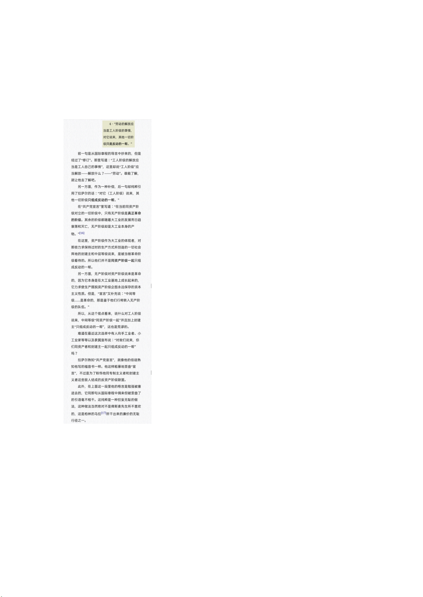
他一切阶级只是反动的一帮。”在当时的德国，这种观点看起来很「左」吧。但是，马克思
在对这句话做出分析之后，却得出结论：这句话「不过是为了粉饰他(指拉萨尔——注）同
专制主义者和封建主义者这些敌人结成的反资产阶级联盟。」详情请参考『哥达纲领批判』：
还可以举的例子是某些毛右。他们常常举着「反修正主义」的牌子宣传法西斯主义，甚至打
着「反法西斯主义」的牌子支持俄国扩张和普京独裁，参考百度乌克兰局势吧。
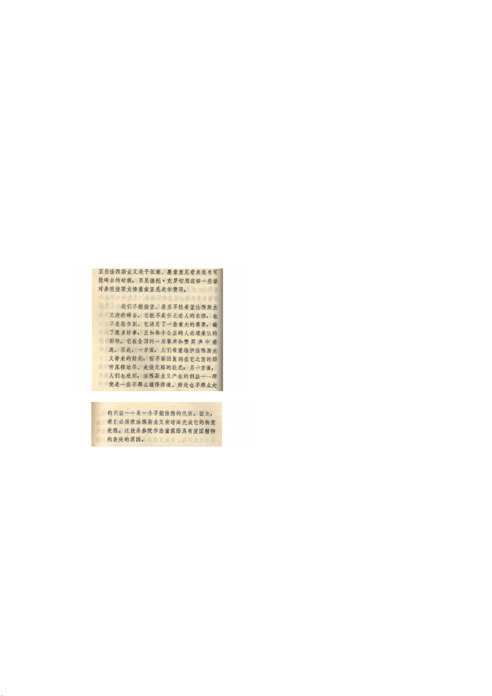
二、与各意识形态关系
①与资产阶级和自由主义
法西斯主义者常常声称自己是「反金融资本主义」「反财阀」「反垄断」的。但是现在我们谁
都知道法西斯主义的上位离不开资产阶级对它的支持。而上台后的法西斯主义者又推行了各
种有利于资产阶级而打压工人阶级和小资产阶级的措施，这方面本文不详细阐述，具体可以
参考夏尔贝特兰的『纳粹德国经济史』。
为什么资产阶级如此支持法西斯主义呢？我们看看意大利自由派贝尼德托·克罗切是怎么说
的：
在那种阶级斗争激烈的时刻，资产阶级当然会喜欢那些高喊着「秩序」「稳定」「国家」「权
力」的法西斯主义者，并把他们看做是资产阶级稳定经济和秩序、安抚人心，从而抵御共产
主义废青的手段，纵使他们行使暴力和夺权。
②与泛左翼
法西斯主义的兴起与泛左翼有许多的联系，这方面人们关注的较少，之所以拿出来重点谈谈，
是因为这正是我们左翼要特别警惕的地方，也是法西斯主义最具有蛊惑性的地方之一。
稍微了解法西斯主义历史的人都可以得出以下两点：
第一，法西斯主义总是把自己包装成贫苦大众的代表，甚至自称是「社会主义」「工团主义」
「反财阀」「反资本主义」。它总是千方百计想把民族主义、专制主义和工人运动结合起来，
企图把工人运动控制在法西斯主义的范围内。你们应该记得这样一些令人印象深刻的名词：
德国的德意志国家社会主义工人党，西班牙的传统主义西班牙国家工团主义进攻委员会方
阵，俄国的民族布尔什维克主义者，中国的入关人和皇道左。
特别是在法西斯主义的早期阶段，法西斯主义还比较弱小，它为了尽可能地骗取群众的支持
以壮大自己，会拼命为自己涂上「左翼」的色彩。一旦它得以上台而不再需要群众，便会把
群众和曾经的「左翼」话语抛在一边，而那些不愿抛弃群众和这些话语的法西斯主义者都会
受到他们所应得的惩罚。当然，法西斯主义在自己衰弱的时候也许会尝试回归到早期的激进
「左翼」形态，因为它这时又需要群众的追捧了。
第二，相当多的重要的法西斯主义者是由共趣分子——而不是由自由主义者或自认的「资
本主义」者——转变而来的。墨索里尼在一战时期是一个右翼社会党人(更早些时候他是个
和平主义+革命无政府工团主义者），希特勒本人又曾经为巴伐利亚苏维埃共和国效忠，而
索雷尔曾是个推崇绝对的无产阶级暴力革命的革命无政府工团主义者，小施特拉塞据说曾在
罗莎·卢森堡的葬礼上悲痛透顶而且后来和台尔曼合作过，北一辉写过『国体论与纯正社会
主义』。
这些人的出现证明了毛的观点的正确性：「路线错了，知识越多越反动。」这种对马克思主义
有一定了解、屁股却坐在资产阶级一方的人（不管是自觉还是不自觉），实际上成为了资产
阶级自上而下蛊惑、欺骗、控制小资产阶级和无产阶级的再合适不过的工具。
大概了解这些之后，在下面我会对法西斯主义和各左翼的联系进行分别具体一些的阐述，这
里需要多次引用美国法西斯主义研究者沃尔特·拉克尔的研究成果。
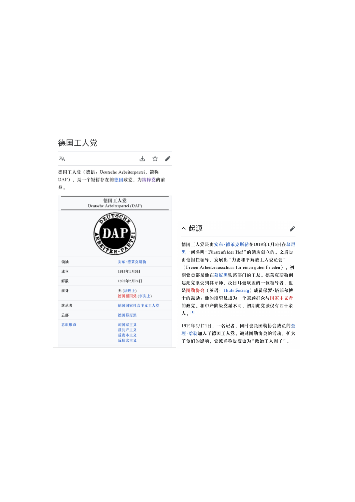
a.与工人阶级
我们先来看看法西斯主义和工人阶级的关系。许多左翼总是想当然地认为法西斯主义和工人
阶级不会有任何联系。的确，法西斯主义这样一种封建专制色彩浓厚的意识形态和现代工人
能有什么关系呢？纳粹党员中工人的比例最多不过是 30%左右罢了。但是，首先我们不妨看
看纳粹党前身是怎样的：
这个党的名字怎么这么好听啊(恼）
我们也可以通过沃尔特·拉克尔的书『法西斯主义——过去、现在、未来』来看看箭十字党、
长枪党在工人阶级中的表现：
“欧洲的一些较小的法西斯主义运动得到了工人阶级相当大的支持:工人在匈牙利的箭十字
党的成员中占 40%至 50%,他们还积极参加了法国法西斯主义。各种情况的理由是不难找到
的:匈牙利的社会主义主要限于熟练工人。由于非熟练工人没有任何政治上的家园,箭十字党
便在他们中间获益匪浅。在法国,主要是巴黎工人中追随雅克·多利奥特的人使法国法西斯主
义有了无产阶级的基础。西班牙的长枪党在其初期也表现为左派,它的早期支持者中有 50%
是工人。”
另外，欧洲的极右翼光头党的主要起源也是工人：
“这种运动（光头党运动）开始时是自发的,主要是工人们的。在其他大部分国家,包括西德
和东德、西班牙和匈牙利,足球迷和光头党之间的联系是同样明显的。在西班牙,光头党起源
于真正马德里的球迷俱乐部和两个巴塞罗那足球队。例外的起源之地是英式足球并不流行的
美国。在美国,光头党出现在极右派的各种组织的边缘,如三 K党和雅利安白种人抵抗组织。
欧洲的光头党主要起源于工人,而美国的光头党似乎在中产阶级中更强大,有着一种公然的犯
罪因素。在他们的支持者中起初有疯狂车手,后来光头党被叫做血与荣誉、恶化者、攻击者、
无情者和决心争取荣耀者。”
如果还需要例子的话，俄罗斯极右翼的「民族统一集团」（RNE）的首领亚历山大·巴卡晓夫
也是出生于工人阶级，他是一个没有受过高等教育的电工。RNE以纳粹党徽为标志，其成
员是一小撮狂热的希特勒崇拜者。沃尔特·拉克尔说：「它主要由城市下层阶级所构成，点缀
一些贵族政治论者。」除巴卡晓夫之外，该集团其他成员的社会背景也主要是工人阶级。RNF
和某些新工会保持有密切联系。
总之，这一切都表明那种无视法西斯主义在工人阶级中的影响的左派是多么无知。
有些左派也许会认为某些法西斯主义运动会因为有大量工人阶级的参与因而具有了一定的
社会主义性质。这种观点是可疑的，而且是民粹主义、自发主义的。打个不太恰当的比方吧：
在中国古代，难道能够因为许多女性信奉三纲五常这一事实而认定三纲五常具有了女权主义
性质吗？无论封建伦理如何「尊重女性」，它始终是强烈要求女性服从于父权统治的。相似
地，无论某些法西斯运动如何叫嚣着要「支持工人运动」「建立无产阶级执政府」「提高工人

福利」，它也始终是强烈要求工人阶级服从于极端反动的大资产阶级专制民族主义、秩序主
义的，因而也是在要求工人服从于最反动的那一部分资产阶级。法西斯主义不是只会开空头
支票的，也许它的确会给予工人某种暂时的、短浅的利益（纳粹政权在冬季搜集金钱和衣物
给穷人，还给工人放了劳动节假期，并且在提供大量基建项目以刺激经济发展的同时促进就
业；法西斯主义意大利引入了适当的家庭津贴和医疗保险制度），但这种给予是以严重损害
工人的长远利益和根本利益为前提的（残酷镇压工人斗争、打压工人组织、压迫工人的阶级
意识等等）。法西斯主义及其先驱者总是有一种倾向：在给予工人一些经济利益、小恩小惠
的同时诱使工人放弃政治权利和进一步的斗争。这很大程度上就是为什么即使在二战的最后
阶段德国工人依然在反法西斯主义方面显得消沉的原因——别忘了，德意志帝国的崩溃主
要是因为外部战争而非内部起义。正如沃尔特·拉克尔所说的：
「尽管纳粹主义和法西斯主义有许多工人阶级党员和支持者,但它们的力量却在于它们对所
有阶级的号召力。然而,一旦掌权,法西斯主义者就破坏工会,使工人阶级的要求和利益服从于
更高的民族野心,主要是在对外政策方面。法西斯主义的最高目的是把工人阶级“重新纳入”
民族主体,从而结束阶级战争。只靠宣传口号是不可能达到这一目标的。即使法西斯主义者
不愿意进行彻底的社会改革,更不用说社会革命,他们也应该改善产业工人的命运,以使产业
工人感觉到同过去相比自己的经济和社会地位已有所改善并继续改善。尽管工人在法西斯主
义未来的国家里不起领导作用,但他们仍然是社会的一个根本部分,所以应当受到重视。只有
这样,法西斯主义政权才或多或少取得成功。也就是说,直到战争的最后阶段,工人并没有积极
反对纳粹主义和法西斯主义。」
也许有些「左派」看到这里就会觉得法西斯主义比民主制要进步了，因为在他们看来即使是
暂时的经济权益也比民主权利重要得多。但是，别忘了，马克思主义者曾支持德国工人反对
俾斯麦王朝社会主义的斗争，因为俾斯麦的各种社会保险法(1883年的疾病保险法、1884年
的意外灾害保险法、1889年的老年保险法)妄图使工人在接受国家救济金的同时放弃选举权。
此外，我们也可以通过列宁的『弗里德里希·恩格斯』来看看两位导师对民主权利和政治自
由的态度是怎样的：
「马克思和恩格斯两人都懂俄文，都读俄文书籍，非常关心俄国的情况，以同情的态度注视
俄国的革命运动，并一直同俄国的革命者保持联系。他们两人都是由民主主义者变成社会主
义者的，所以他们仇恨政治专横的民主情感非常强烈。由于马克思和恩格斯具有这种直接的
政治情感、对政治专横与经济压迫之间的联系的深刻理论认识以及丰富的生活经验，所以他
们在政治方面异常敏感。因此，俄国少数革命者所进行的反对强大的沙皇政府的英勇斗争，
总是得到这两位久经锻炼的革命家最表同情的反响。相反，那种为了虚幻的经济利益而离开
争取政治自由这一俄国社会党人最直接最重要的任务的图谋，在他们看来自然是可疑的，他
们甚至直截了当地认为这是背叛伟大的社会革命事业。“无产阶级的解放应当是无产阶级自
己的事情”，——这就是马克思和恩格斯经常教导的。而无产阶级要争取经济上的解放，就
必须争得一定的政治权利。此外，马克思和恩格斯都清楚地看到，俄国政治革命对于西欧的
工人运动也会有巨大的意义。专制的俄国向来是欧洲一切反动势力的堡垒。1870年的战争
造成了德法之间长期的纷争，使俄国处于一种非常有利的国际地位，这当然只是增加了专制
俄国这一反动力量的作用。只有自由的俄国，即既不需要压迫波兰人、芬兰人、德意志人、
亚美尼亚人及其他弱小民族，也不需要经常挑拨德法两国关系的俄国，才能使现代欧洲摆脱
战争负担而松一口气，才能削弱欧洲的一切反动势力，加强欧洲工人阶级的力量。因此，恩
格斯为了西欧工人运动的胜利，也渴望俄国实现政治自由。」
因此，如果一个法西斯主义运动有许多工人参与的话，那也只能表明这些工人的阶级意识是
如何的不成熟，不懂得自身的真正利益和诉求，因而他们轻易地被极右翼蛊惑去了，即被资
产阶级自上而下地控制了。在这种情况下，这些工人会真的把法西斯主义看作是自己利益的
代表，把大资产阶级的专制民族主义诉求幻想成是工人阶级自己的诉求。特别是当大资产阶
级把它自己的诉求与工人的诉求巧妙地缝合起来的时候，法西斯主义的这种蛊惑性就更强了
（当然，无论怎样缝合，大资产阶级会使自己的诉求保持主导的地位）。在经济危机时期，
大量的小资产阶级破产，正是带来了这样一些阶级意识不成熟的无产阶级。在现在的中国，
随处可见的农民工也是类似的产物。此外，法西斯主义也可以通过洗脑和暴力来强迫工人阶
级支持它，并疯狂摧残工人阶级的阶级意识。
当然，总的来说，法西斯主义的蛊惑对象依然主要是工人贵族和小资产阶级，而不是工人阶
级。正如沃尔特·拉克尔所说的：
“在大多数法西斯主义运动中白领工人有非常强烈的表现,而工人阶级的表现却大不相同:起
初在法国它是强烈的,在西班牙是相对强烈的,但在除匈牙利之外的东欧却不怎么强烈。原因
是非常偶然的——一个有名望的地方领袖加入法西斯主义组织,往往会带去他的追随者。”
这种有声望的地方领袖包括了许多受工人阶级欢迎的左翼人士，比如刚才已经提到过了的法
国共产党人雅克·多利奥特。
b.与环境保护主义
法西斯主义者怀念中世纪的理想状态，因而他们在意识形态上对城市和污染表现出厌恶，反
映出保守农民的愿望。沃尔特·拉克尔也对这种情况进行了论述：“在 70年代和 80年代,极
右派对生态学问题显示出了兴趣。他们的一些领导人甚至声称,未来这些问题会具有核心重
要的地位,要把握极右派的政治前途。在俄罗斯,“绿浪”起始于“乡村作家”对俄罗斯乡村的
重新发现。同时举行地方会议和游行,抗议对气候、森林、河流和湖泊(包括贝尔加湖、咸海
和黑海)的全面污染以及重新挖掘西伯利亚河流、散发有毒气体和其他有害物质。切尔诺贝
利核电站灾难给了这种运动额外的推动力。尽管这些倡议最早不是极右派发起的,但作为得
民心的事业它们帮助极右派找到了新的支持者,并在更广泛的民众中被接受。”
当然，极右派的目的之不纯也是很明显的：
“民族革命派和死硬的纳粹分子已经渗透进现存的绿党或已成立的新党中。民族革命派更真
诚地赞同与自然的新的和谐。但他们不是争取其他绿党人士参加他们的事业,而是转向生态
学家,跑向老右派。新纳粹分子有时选择一个乡村作为他们的指挥部,但他们并没有选择农业
作为他们的生活方式。他们仍然着迷于制造他们的小册子,宣扬第二次世界大战中党卫军的
英雄行为——《天国长老的礼仪》,恶毒的美国人和波兰人,这些宣传和农村的环境之间没有
任何明显的联系。一段时间俄罗斯的纪念党在莫斯科的郊外建立了一个农场,但它的主要目
的是赚钱资助党的活动。德国和法国的新法西斯主义者有时表现出对生态学运动的同情,但
这些运动和法西斯主义的观念没有什么联系。这些声明主要是基于选举上的考虑:绿党是有
用的,因为它削弱了现有的大党,因而也削弱了新法西斯主义者想推翻的整个制度。”
c.与改良主义：
许多改良派和保守派社民对法西斯主义表现了狂热的支持。这方面你们可以查查著名费边主
义 作 家 、 大 文 豪 萧 伯 纳 对 所 谓 的 「 超 人 」 墨 索 里 尼 和 希 特 勒 的 狂 热 吹 捧 ：
https://xw.qq.com/iphone/m/youxia/4e0d67e54ad6626e957d15b08ae128a6.html
实际上，许多改良主义意识形态本身就含有法西斯主义的一些因素。拉萨尔正是俾斯麦在工
人阶级中的改良主义代言人。另外，欧洲小资产阶级社会主义者欧根·杜林曾说：「从根本上
说，只有让犹太人彻底消失才称得上是解决犹太人问题的根本方法。」
d.与苏东修正主义
在中国，毛算是最先把赫鲁晓夫——勃列日涅夫集团统治下的苏联称为法西斯主义国家的
人。毛针对赫鲁晓夫及其后的苏联，指出：「现在的苏联是资产阶级专政，是大资产阶级专
政，德国法西斯式的专政，希特勒式的专政。」毛派认为：在经济上，苏联在赫鲁晓夫上台
后对国有企业进行了利润化改革，把社会主义的国有企业转化成了法西斯主义的官僚资本国
有企业。在政治上，苏联抛弃了无产阶级专政，在「全民国家」的名义下施行大官僚资产阶
级的法西斯专政，把斯大林留下的无产阶级专政机器用于官僚资产阶级的目的。值得一提的
是，自从勃列日涅夫上台后，苏联官方的「无产阶级专政」话语又重新多起来了。似乎苏联
要重新回到斯大林时代的左派道路了，不是吗？但是，人民日报针对这种欺骗，指出：
「苏修叛徒集团过去说“无产阶级专政在苏联已经不再是必要的”，苏联“已变为全民国
家”了。现在又自打嘴巴，说“全民国家继续无产阶级专政的事业”，“全民国家”同“无产
阶级专政国家”是“一个类型”。他们还大叫大嚷要“加强党的领导”，“加强纪律”’“加强
集中”，等等。又是“全民国家”，又是“无产阶级专政”，把两个根本冲突的概念硬拼凑在
一起，无非是用来欺骗群众，掩盖大资产阶级的专政。他们所说的“党的领导”，就是一小
撮社会法西斯寡头对广大党员和群众的政治控制。他们所说的“纪律”，就是镇压一切不满
于他们统治的人。他们所说的“集中”，就是把政治、经济、军事权力进一步集中到他们这
一伙人的手里。一句话，他们打出这些幌子，都是为了加强法西斯专政和准备侵略战争。」
是的，勃列日涅夫并没有回到斯大林时代，而只不过是在打着「无产阶级专政」的旗号强化
法西斯专政罢了。之所以我提到这种情况，是因为这与我们中国的现状具有非常的相似性。
*他*上台之后，不也是有某些老左鼓吹中国要回到毛泽东时代的左派道路了吗？不多谈！
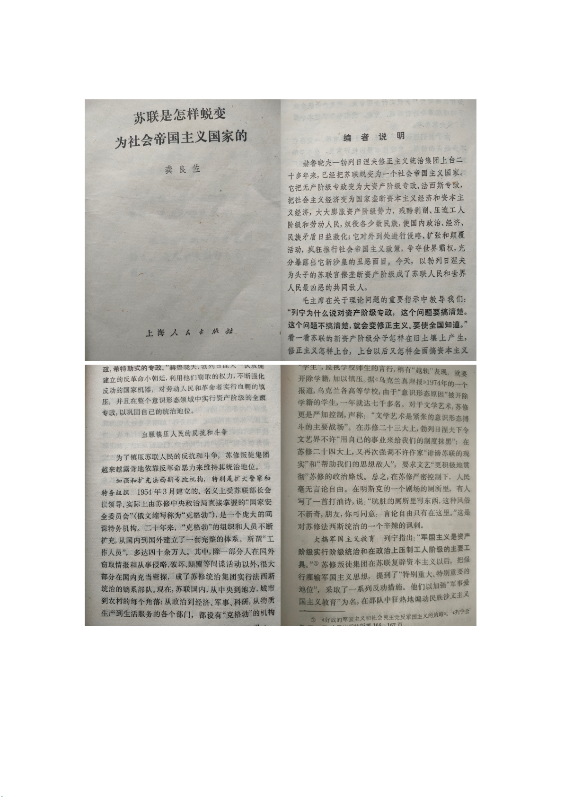
更多的关于苏修法西斯专政的论述可以在『苏联是怎样蜕变为社会帝国主义国家的』中看到：
另一个在苏东修正主义和法西斯主义之间建立起关联的事情是：有资料表明史塔西曾经与西
德的新法西斯主义有着许多合作：
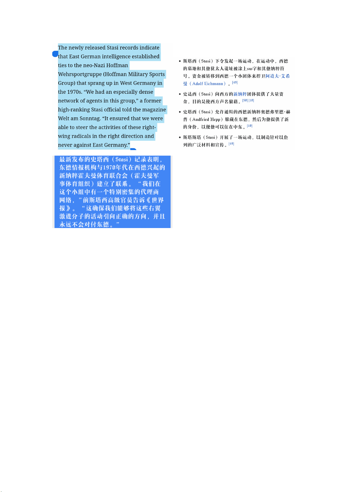
具体你们可以去这看看；
https://www.google.com/amp/s/www.latimes.com/archives/la-xpm-2000-sep-10-op-18655-story.
html%3f_amp=true
很难让人相信修正主义东德对法西斯主义的支持如他们所自称的那样只是为了「使西德声名
狼藉」，因为这很难解释为什么他们要帮助纳粹通缉犯去中东躲藏(难道不怕败坏了他们自己
的声誉吗？）。
沃尔特·拉克尔还介绍了苏东剧变后东欧出现的大量的红褐联盟(红——指共产主义，褐
——指法西斯主义)：“在 1991年后出现了另一种变化,俄罗斯极右派和新法西斯主义者认识
到,(新)共产党是他们的天然盟友。他们都讨厌资本主义和自由主义。极右派的这些人不得不
对他们的同伴做出政治上的和学说上的让步。按照新的说法,共产党不是完全错误的,马克思
和列宁的影响只是到了现在才能被纯洁化。因此,出现的“红褐联盟”非常不喜欢犹太人,但又
不能使反犹主义成为它的纲领的核心要点。”
“在学说的层次上,并且出于实践的理由,反共的右派和新共产党人之间也出现了友好关系。
极右派尽管有点勉强,但还是承认,如果它反对自由主义、民主和资本主义的话,它就不得不拥
护共产党领导下的国家控制的经济甚至是国有制。而共产党人也很快认识到,他们不得不放
弃他们意识形态的国际主义的特点,适应民族社会主义的需要。极右派和新共产党人都想要
一个强大的俄罗斯国家。尤其在他们面临着共同的敌人的情形下,懂得为了在政治斗争中强
盛起来,他们就必须联合力量。许多差别仍然存在,但在 1991年到 1995年间,右派成了更社会
主义的(或至少是集体主义的),左派成了更民族主义的。分界线开始模糊了。”
东欧的红褐联盟的出色例子是罗马尼亚的大罗马尼亚人党（GRP）与社会主义劳动党（SLP）
的合作。GRP具有强烈的排外主义和反犹主义倾向，其成立据说曾受到前共产党人和秘密
警察的协助。而 SLP的领导人维尔德茨曾是前共产主义政权的总理。
我本人认为这种与法西斯主义合作的共产主义实质上是苏东修正主义在剧变后的延续。所
以，作为一个斯毛人，我对这种现象的解释是：苏修解体后的一些（新）共产党很多都是怀
念苏修时期的国家垄断官僚资产阶级的法西斯专政的，所以新法西斯分子和他们贴贴也是
理所当然的了。
实际上，苏修解体后出现的极右派往往都有着重振苏联雄风的想法。俄罗斯自由民主党的日
里诺夫斯基正是如此。日里诺夫斯基主张重新将苏联统一，这个新的苏维埃帝国甚至会包括
波兰、芬兰和巴尔干共和国。如果俄罗斯经济上的打击措施不能使巴尔干国家服从的话，他
认为可以沿着巴尔干各国边界埋下核废料，以致所有人死于辐射。日里诺夫斯基还具有强烈
的反美情绪：「我们最大的问题是美国人和犹太复国主义者」。日里诺夫斯基在经济上的观点
是不确定的，没有表明他是要完全的国营经济还是要混合经济。
我们也来看看俄罗斯右翼组织民族拯救阵线的表现：

“民族拯救阵线声称,他们首先是俄罗斯爱国者,打算恢复强大的俄罗斯国家。如果只能靠采
取法西斯主义手段来达到这一目的的话,那就采取法西斯主义手段。他们认为:俄罗斯的力量
和伟大是至关重要的,是他们最为关心的,自由和人权则不是。甚至叶利钦政府的成员也属于
有这种反应的人。这些观点反映了对帝国丧失和根绝了 250年俄罗斯历史的政治的和心理的
反应,以及对前苏联的分裂主义者和逃兵的愤恨。它们还反映了对西方不平等对待俄罗斯的
气愤。的确,忽视这些感情,就会低估支持冲向民族主义专制的运动的力量源泉。它们具有一
种几乎无限的对“秩序”的要求,要求政权能够消除危机、稳定俄罗斯经济并恢复俄罗斯过去
的力量和强盛。这种专制肯定是反民主的。它是属于佛朗哥或皮诺切特(俄罗斯右派心目中
的英雄)的权威主义模式,还是更极端的和公开的法西斯主义模式,是难以预言的。有关的人并
不急于说出这些细节。”
e.与托洛茨基主义
自从二战前夕世界各国的一些左派开始建立起斯大林主义提倡的人民阵线以对抗法西斯主
义起，托洛茨基就没有停下过对这种行为的谴责。他反对人民阵线，认为不应该和民主派、
社民联合起来对抗法西斯主义，因为这种联合在他眼里只会败坏工人运动的纯洁性。这种观
点看起来比主张和资产阶级民主派联合的斯大林主义要进步多了不是吗？可是，这种言论实
际上只会破坏反法西斯同盟的团结，并成为助长法西斯主义气焰的工具，而托派也会可能因
此沦为法西斯主义者的工具人。在这里我们又看到了披极「左」之皮、行极右之事的情况。
另外，许多托洛茨基主义者总是表现出对苏修的莫大同情：他们支持苏修侵略捷克斯洛伐克，
惋惜苏修的解体（在这些方面他们的确和皇道左一致）。如果你们承认毛的观点（即苏修是
个法西斯主义国家）的话，那么这也可以作为托洛茨基主义者和法西斯主义有联系的证据。
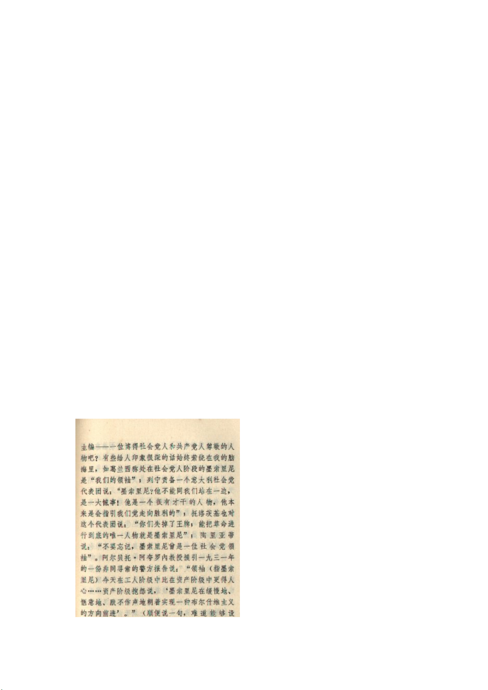
f.与安那其主义
无可否认的是，最初的意大利法西斯主义者主要是由无政府工团主义者转变而来的，这表明
无政府主义和法西斯主义有着重要的关系。关于这种关系，下面这篇文章有一个不错的论述，
但是它的分析是远远不够的，毕竟它只是分析了两者的相同处，却没有分析出两者具有很重
要的不同点的原因。文章：https://wk.baidu.com/view/80bf0d8f2cc58bd63086bd25
在这些无政府主义者之间，墨索里尼的前半生是最值得拿出来谈谈的。他出身于一个革命家
庭，自身观点受到了无政府主义的影响，一度是个和平主义者，并且极度蔑视意大利的国家
威严。在 1911年的的黎波里战争中，墨索里尼发表了令人瞩目的反战演讲，声称：「意大利
国旗是一块只配插在粪堆上的破布。」在那时，墨索里尼喜欢自称是马克思主义者，对马克
思钦佩有加。但是他后来却认为由马克思主义指导的社会主义已经近于失败，于是转而崇拜
尼采，决定用尼采的「超人」理论来发展社会主义。他在一战开始不久后立场发生了重大转
变，强烈要求意大利加入法国一方参战，最终因其右翼言论被开除出了意大利社会党。一位
杰出并且在左派中享有声誉的革命者发生了这样的转变，谁也不能不为此感到惋惜，你们可
以看看列宁、托洛茨基等人对墨索里尼及其转变的评价：
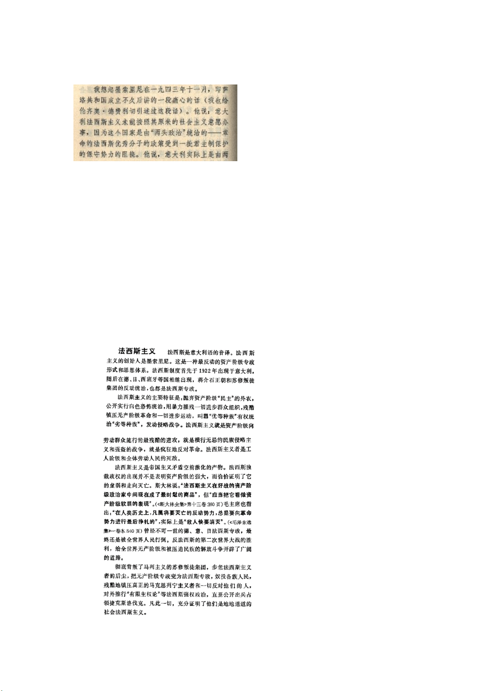
顺便说一下，看起来我们的墨索里尼同志即使在 1943年也没有忘记他的初心！
还是那句话：「路线错了，知识越多越反动。」不仅知识如此，才干、能力也如此。
如 果 需 要 更 多 的 关 于 墨 索 里 尼 的 左 翼 生 涯 的 信 息 ， 可 以 看 一 看 这 篇 文 章 ：
https://m.allhistory.com/article/new/59edb58b1bc92219846c1533
g.与中国修正主义
毛在指出苏修的法西斯性质时，同时也多次指出了中国被修正主义者夺权后成为法西斯主义
国家的危险。现代各国的毛派也不只一次地指责中国是法西斯主义国家。为什么这么说呢？
我们可以通过 1975年的『哲学小辞典』来看看斯大林主义学派是如何定义法西斯主义的：
有人会说：不对，中国虽然对内高压，但是却没有对外推行侵略扩张，所以不应该是法西斯
主义。这看起来会是一个有力的反驳。但是，我们不妨先来看看周恩来在「论中国的法西斯
主义」里面是如何论述蒋家王朝的法西斯主义性质的：
「于是又有人问：法西斯主义是民族侵略主义，蒋介石国民党既还抗战以抵抗日本侵略者，
为什么叫他做法西斯主义呢？我们回答：正因为这样，所以毛泽东同志叫他做中国的法西斯
主义了。民族侵略主义是法西斯主义的一种特征，不是唯一的特征。季米特洛夫报告中讲的
法西斯主义的四种特征，除了民族侵略主义这一点外，中国法西斯主义都是具有的。蒋介石
国民党在历史上在现在，都是向人民向劳动群众施行最残酷的进攻，以至于进行镇压革命的
内战，实行疯狂猖獗的反动和反革命，成为全中国人民的死敌。只是因为中国已处在殖民地
半殖民地的环境中，中国大地主大资产阶级无力对外侵略。至于他对国内各小民族，还不是
充满了大汉族主义的民族优越感和传统的理藩政策的思想么？即在对外，国民党还不是有人
在提倡大中华联邦应该圈入安南、泰国、缅甸、朝鲜甚至南洋群岛么？季米特洛夫曾经说过，
因各国历史社会经济条件不同，因各国民族特性及国际地位不同，所以法西斯主义的发展和
法西斯专政本身，在各国所采取的形式也是不同的。斯大林也早说过，德国法西斯主义的出
现是表明资产阶级的力量已经削弱，资产阶级在内政方面已经不能采用旧的国会制度和资产
阶级民主的方法来维持其统治，因此，就只得采用恐怖的手段。在一定意义上，我们不也可
以用于解释中国的大地主大资产阶级的统治么？所以我们也可以说，中国的法西斯主义是中
国大地主大资产阶级——实际上就是蒋介石国民党和官僚资本公开的恐怖的专政，亦即特
务统治。」
注：季米特洛夫总结出的法西斯主义的四大特征是：1、法西斯是资本家对劳动人民大众的最猖狂的进攻 2、
法西斯是肆无忌惮的沙文主义和侵略战争 3、法西斯是疯狂的反动派和反革命;4、法西斯主义是工人阶级和
全体劳动人民的最恶毒的敌人。
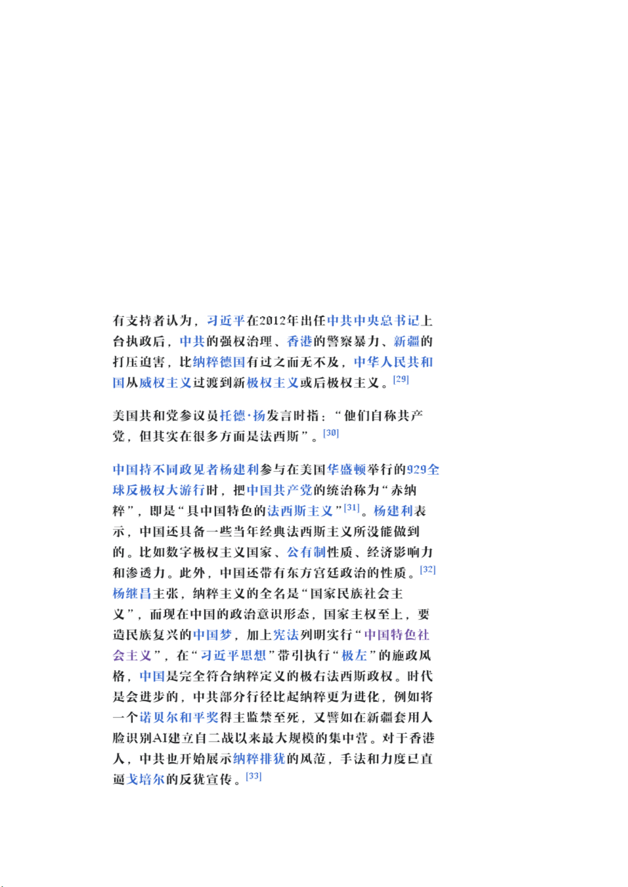
同样，我们也可以说：中国虽然不符合法西斯主义的民族侵略主义特征，但其他的都具备了
(大资产阶级一党专政、否定资产阶级民主、疯狂镇压工人斗争、高压统治、反革命恐怖等
等)。暴君蒋介石之所以不对外侵略，是因为受制于中国的半殖民地半封建性；相似地，中
修的暴君之所以不对外侵略，是因为受制于中华帝国主义的弱小性（当然现在它正在迅速地
壮大）。所以，从斯大林主义的角度来看，把中国称为法西斯主义国家确实是相当恰当的。
当然，自由派在这方面不缺乏共识。以下是维基百科上的一些相关信息：
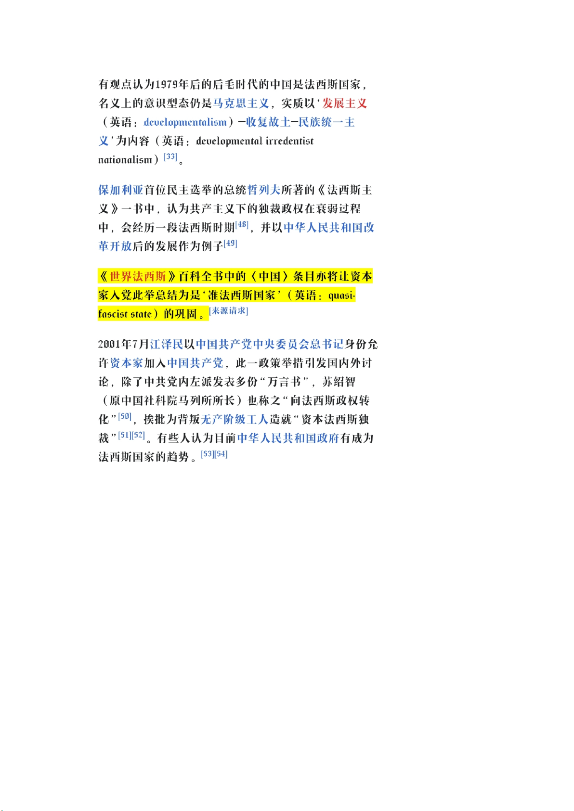
现在我抛开中国的官方意识形态不谈，来谈谈民间的法西斯主义。
必须指出，某些「老左」实际上带有着浓厚的法西斯主义色彩。前些时间有吧友转发了某乌
有之乡创办者的言论。在那个帖子里，我钦点这种言论是「封建社会主义」。实际上，它还
有很浓的法西斯主义色彩。这种言论即使不是法西斯主义的，那也是在孕育着法西斯主义，
而直到现在乌有之乡也未能脱离这种极右翼思想的影响。为什么这么说呢？我们知道法西斯
主义在意识形态上的重要特征就是反自由主义、反唯物主义、反理性主义、反西方。而在法
西斯主义看来，马克思主义就是资产阶级自由主义、唯物主义、理性主义等等西方思想的继
承者，因而他们也疯狂攻击马克思主义。正如『作为群众运动的法西斯主义』一书所论述的：
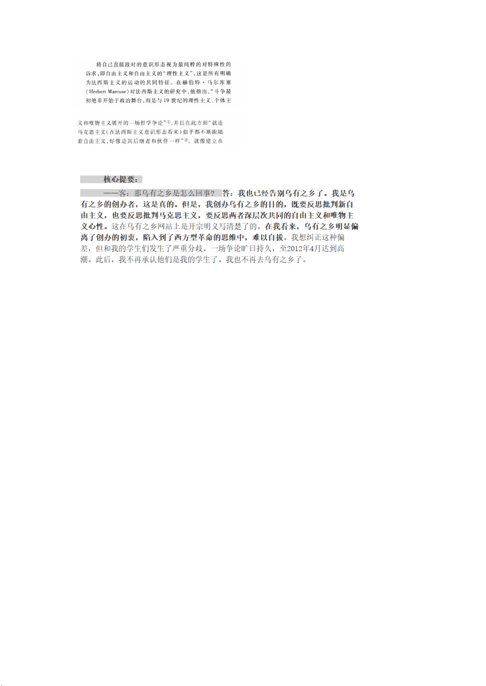
我们再看一下某乌有之乡创办者的言论：
一 目 了 然
至于最近在中国兴起的皇道左，这也不过是某种偏右翼的老左理论受众的更新换代罢了：皇
道派的受众比那种老左年轻些，除此之外两者的区别是次要的，两者都可以被归类为民族毛
主义(法西斯主义的一种)。支持加强中修领导和纪律、喜爱官僚资本企业和「民族企业家」、
遵循传统文化、鼓吹反西方的中华民族主义是这种老左的特征。
需要注意的是，皇道左、原教旨主义菟或毛主义菟（即使他们自称是毛主义）甚至可以是比
自由派和普通菟更加反动的，正如民族社会主义者（即使他们自称是社会主义）比自由派和
普通的民族主义者更反动一样。他们不仅为中国的大官僚资产阶级蛊惑了相当一部分人，还
打算用斯大林主义的革命恐怖手段来为中修的反革命恐怖暴行提供理论支持(他们把这两种
截然相反的恐怖混为一谈)，而且他们的伪装和言论会歪曲「毛主义者」「左派」的形象。
h.法西斯主义中的「左翼」思想：（信息整理自英文维基，自行分辨真假）
戈培尔在早期也是个有共产主义色彩的人。在那时，他曾说：「共产主义和国家社会主义之
间的分界线是很薄的」。这种类型的言论据说使许多红色阵线的战士转而加入国家社会主义
的行列，许多工人出身的革命者也不顾德国共产党的反对而加入纳粹党。
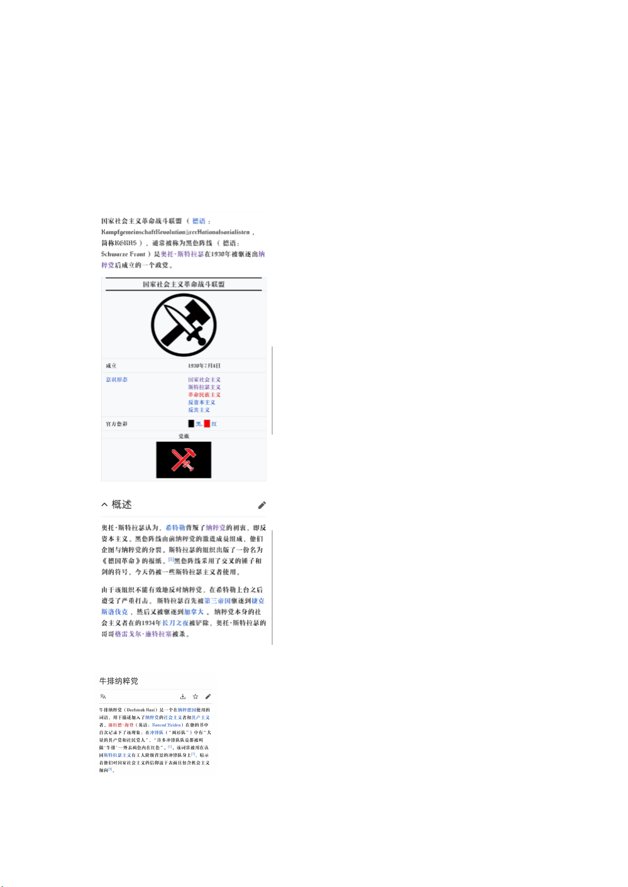
恩斯特·罗姆(德国纳粹冲锋队头目)的「社会主义」性质的观点有：认为生产资料要由工人
掌握，要没收并分配上层阶级的财产。他认为：希特勒上台后的德国需要「二次革命」，但
这次的革命「不是反对左派，而是反对右派」。他曾在日记中说他的观点得到过戈培尔的支
持。在维基百科找到的其他的一些相关词条：
施特拉瑟主义，不多谈！
这....被骗进法西斯主义组织的左人？
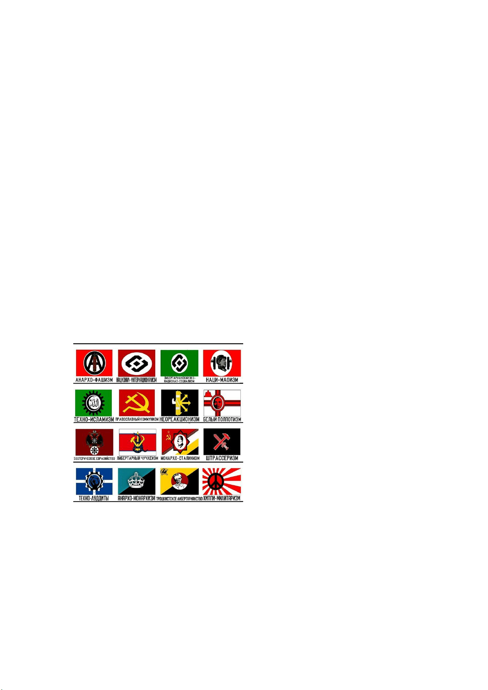
③与波拿巴主义：
理解波拿巴主义的产生对理解法西斯主义有帮助。在马克思、恩格斯看来，波拿巴主义是阶
级斗争激烈、各阶级力量对比均衡时大资产阶级为维护自身权益而自上而下确立的一种最反
动的统治。这与法西斯主义是相似的（就算你把中修之流看作是一种法西斯主义也是这样）。
所以把法西斯主义称为现代波拿巴主义也许是正确的。此外法西斯主义和波拿巴主义的相似
点也是很多的：建立资产阶级专制官僚国家机构、拥有一个支持它的群众性运动、声称建立
了一个超阶级的全民国家等等。
如果要详细了解波拿巴主义请读马克思的『路易波拿巴的雾月十八日』。另外，知乎的这个
回答对于理解波拿巴主义也有非常大的好处：https://www.zhihu.com/answer/875056361
④与第三位置主义
上图为一些冷门的法西斯主义和第三位置意识形态。
翻译：АНАРХО-ФАШИЗМ 安那其法西斯主义
НАЦИОНАЛ-ИНТЕРНАЦИОНАЛИЗМ 民族国际主义
ЛИБЕРТАРИАНСКИЙЗКО-НАЦИОНАЛ-СОЦИАЛИЗМ 自由国民左翼民族社会主义
НАЦИ-МАОИЗМ 民族毛主义(！！！)
ТЕХНО-ИСЛАМИЗМ技术-伊斯兰主义
ПРАВОСЛАВНЫЙКОММУНИЗМ东正教康米
НЕОРЕАКЦИОНИЗМ 新行动主义
БЕЛЫЙПОЛПОТИЗМ 白色极权主义
(接上页)
ЭЗОТЕРИЧЕСКОЕЕВРАЗИЙСТВО 申必欧亚主义？？
ЛИБЕРТАРНЫЙЧУЧХЕИЗМ 自由意志主体思想
МОНАРХО-СТАЛИНИЗМ 斯大林君主主义
ШТРАССЕРИЗМ 施特拉塞主义
ТЕХНО-ЛУДДИТЫ 技术卢德主义？
АНАРХО-МОНАРХИЗМ 安那其君主主义
ТРОЦКИСТСКОЕЛИБЕРТАРИАНСТВО 托洛斯基自由意志主义
ХИППИ-МИЛИТАРИЗМ 嬉皮军国主义
第三位置和法西斯主义的关系是紧密的，了解第三位置的发展有利于了解法西斯主义及其先
驱 者 （ 俾 斯 麦 的 王 朝 社 会 主 义 等 等 ） 的 发 展 ， 这 方 面 可 以 看 看 全 历 史 的 词 条 ：
https://m.allhistory.com/detail/59244fe755b54278ac02c562
LONGLIVETHEANTI-FASCISM